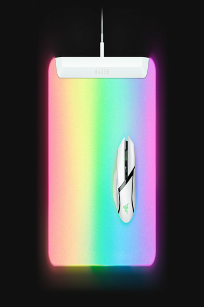

← All Guides
Best RGB Gaming Mousepad 2026: What 4 Reviewers Agree On
Aggregated from 4 YouTube reviews · Updated 2026-10-03

Razer Firefly V2 Pro
Recommended by all 4 reviewers: Tom's Hardware's tested best RGB pad, with full-surface 15-zone Chroma backlighting and a hard micro-textured surface confirmed by three hands-on reviews
📊 Quick Comparison
| # | Product | Recommended By | Best For | Price |
|---|
| 1 | Razer Firefly V2 Pro | 4/4 reviewers | Flagship RGB setup | Under $100 |
| 2 | Razer Strider Chroma | 1/4 reviewers | Large hybrid surface with RGB | $100-$130 |
| 3 | HyperX Pulsefire Mat (XL RGB) | 1/4 reviewers | Full-desk XL with RGB | $49-$59 |
| 4 | Cooler Master MP750 | 1/4 reviewers | Budget RGB pad | $19-$39 |
💬 Reviewer Consensus
Common Pros
- Razer Firefly V2 Pro: Tom's Hardware's best RGB pad - edge-to-edge 15-zone backlight with a hard tracking surface, confirmed by three hands-on reviews (4/4 mention)
- Razer Strider Chroma: Tom's Hardware's best hybrid surface - a slicker-than-cloth RGB mat that still tracks precisely (1/4 mention)
- HyperX Pulsefire: Tom's Hardware's best XL cloth pad with RGB - full desk coverage with two lighting zones (1/4 mention)
- Cooler Master MP750: Tom's Hardware's best budget RGB pad - spill-resistant cloth with a detachable cable (1/4 mention)
Common Cons
- RGB pads need a USB cable: one more wire on the desk (2/4 mention)
- Full backlighting adds real cost - a $100 pad buys the light show, not the surface (3/4 mention)
- Hard RGB surfaces are louder under fast mouse movements (2/4 mention)
🔍 Detailed Breakdown
Razer Firefly V2 Pro
🛒 Buy on Amazon →Tom's Hardware's best RGB pad, backed by hands-on reviews from HotHardware, Windows Central, and WePC: the world's first backlit RGB mouse pad with a hard tracking surface and a USB pass-through for your mouse dongle.
Extra: Integrated USB 2.0 pass-through port
RGB Lighting: 15-zone Chroma backlight, 16.8M colors
Size: 360 x 278 mm (14.2 x 10.9 in)
Surface: Hard micro-textured
Best for: Flagship RGB setup · Under $100
Razer Strider Chroma
🛒 Buy on Amazon →Tom's Hardware's best hybrid-surface RGB pad: slicker than cloth but with enough texture for precise movements - one RGB mat for both speed and control playstyles.
RGB Lighting: 19-zone Chroma, 16.8M colors
Size: 900 x 370 mm (35.4 x 14.6 in)
Surface: Hybrid soft/hard weave
Thickness: 4 mm
Best for: Large hybrid surface with RGB · $100-$130
HyperX Pulsefire Mat (XL RGB)
🛒 Buy on Amazon →Tom's Hardware's best XL cloth pad with RGB: large enough to cover the whole desk, with two lighting zones and a touch-sensitive sensor for controls.
RGB Lighting: 2 customizable zones, touch sensor
Size: 900 x 420 mm (35.4 x 16.5 in)
Surface: Smooth cloth
Thickness: 4 mm
Best for: Full-desk XL with RGB · $49-$59
Cooler Master MP750
🛒 Buy on Amazon →Tom's Hardware's best budget RGB pad: an affordable light-up mat in several sizes with a spill-resistant cloth surface and a detachable cable.
Base: Non-slip rubber
Connection: Detachable USB cable
RGB Lighting: Edge RGB, multiple modes
Size: 370 x 270 mm (M), up to 900 x 400 mm (XL)
Surface: Spill-resistant cloth
Thickness: 3 mm
Best for: Budget RGB pad · $19-$39
📺 Video Sources
Show 4 review videos
📺
Tom's Hardware — Best Mouse Pads 2026: Our Tested Picks for Performance and Pretty Lights
Watch Video📺
HotHardware — Razer Firefly V2 Pro Mouse Mat Review: Slick, Rigid, With RGB
Watch Video📺
Windows Central — Razer Firefly V2 Pro review: A premium mousepad with some serious personality
Watch Video